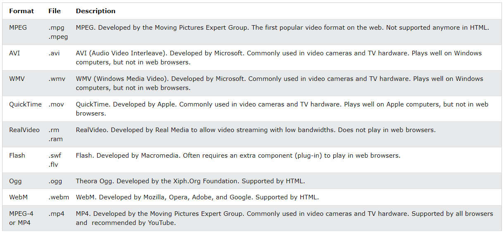
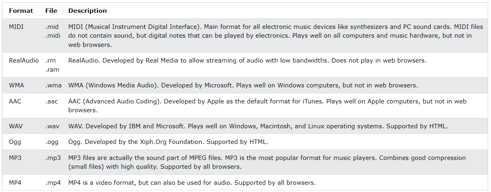

Multimídia
Multimídia é um termo que abrange sons, músicas, vídeos, filmes e animações.
Há vários formatos de mídia. Multimídia pode ser quase qualquer coisa que você vê ou ouve, como imagens, músicas, sons, vídeos, gravações, filmes, animações e muito mais.
As páginas da Web geralmente apresentam elementos multimídia de diferentes tipos e formatos.
Formatos de multimídia
Elementos multimídia (como áudio ou vídeo) são armazenados em arquivos de mídia.
A maneira mais comum de descobrir o tipo de um arquvio, é olhar sua extensão.
Arquivos multimídia têm formatos e extensões como: .wav, .mp3, .mp4, .mpg, .wmv e .avi.
Formatos de vídeo mais comuns
Há muitos formatos de vídeo disponíveis.
O HTML oferece suporte aos formatos MP4, WebM e Ogg.
O formato MP4 é o recomendado pelo YouTube.

Apenas os formatos de vídeo MP4, WebM e Ogg são compatíveis com o padrão HTML.
Formatos de áudio mais comuns
MP3 é o melhor formato para áudio. O termo MP3 se tornou um sinônimo para áudio digital.
Se seu site fala sobre gravações musicais, escolha o MP3.

Apenas os formatos de áudio MP3, WAV e Ogg são compatíveis com o padrão HTML.
Vídeo HTML
Para exibir um vídeo em uma página da Web, use o elemento HTML <video>.
Código do vídeo acima:
<video style="margin-left: 10px;" width="400" controls>
<source src="movie path/movie file.mp4" type="video/mp4" poster="poster path/poster file.png">
<source src="movie.ogg" type="video/ogg">
Your browser does not support the video tag.
</video>
Como funciona?
O atributo controls exibe os controles do vídeo, como Reproduzir, Pausar e Volume.
Recomenda-se sempre incluir os atributos width e height. Se não forem definidos, a página poderá "piscar" quando o vídeo carregar.
O elemento <source> possibilita definir arquivos de vídeo alternativos para o navegador escolher. O navegador usará o primeiro formato reconhecido.
O texto entre as tags <video> e </video> só será exibido em navegadores que não oferecem suporte para o elemento <video>.
Também é possível adicionar uma imagem .png como pôster para o vídeo usando o atributo poster="".
O elemento <track> define trilhas de texto em reprodutores de mídia.
O atributo autoplay
Use este atributo para começar a reproduzir o vídeo automaticamente. P.ex.:
<video width="320" height="240" autoplay></video>
Observação: na maioria dos casos, navegadores baseados em Chromium não permitem o uso do autoplay. Entretanto, a reprodução automática com o vídeo no mudo é sempre permitida. Então adicione muted após autoplay para que seu vídeo comece a reproduzir automaticamente, apesar de emudecido:
<video width="320" height="240" autoplay muted></video>
Métodos, propriedades e eventos
O DOM do HTML define os métodos, as propriedades e os eventos do elemento <video>.
Isso nos permite carregar, reproduzir e pausar vídeos, além de definir a duração e o volume.
Também há eventos DOM que podem notificar o usuário quando o vídeo começa a reproduzir, é pausado, etc.
Exemplo usando JavaScript:
Lista completa de referências de DOM para áudio e vídeo
Áudio HTML
Para reproduzir um áudio em uma página da Web, use o elemento <audio>.
Código do áudio acima:
<audio controls>
<source src="../img/audio/23 - I Finally Found Someone.mp3" type="audio/mp3">
<source src="../img/audio/24 - Vale Decem.mp3" type="audio/mp3">
Your browser does not support the audio element.
</audio>
Como funciona?
O atributo controls exibe controles de áudio, como Reproduzir, Pausar e Volume.
O elemento <source> possibilita definir arquivos de áudio alternativos para o navegador escolher. O navegador usará o primeiro formato reconhecido.
O texto entre as tags <audio> e </audio> só será exibido em navegadores que não oferecem suporte para o elemento <audio>.
O atributo autoplay
Use este atributo para começar a reproduzir o áudio automaticamente.
<audio controls autoplay></audio>
Observação: na maioria dos casos, navegadores baseados em Chromium não permitem o uso do autoplay. Entretanto, a reprodução automática com o áudio no mudo é sempre permitida. Então adicione muted após autoplay para que seu áudio comece a reproduzir automaticamente, apesar de emudecido:
<audio autoplay muted></audio>
Métodos, propriedades e eventos
O DOM do HTML define os métodos, as propriedades e os eventos do elemento <audio>.
Isso nos permite carregar, reproduzir e pausar áudios, além de definir a duração e o volume.
Também há eventos DOM que podem notificar o usuário quando o áudio começa a reproduzir, é pausado, etc.
Plug-ins HTML
Plug-ins são programas de computador que ampliam as funcionalidades padrão dos navegadores.
Há plug-ins para os mais diferentes tipos de propósitos:
- Exibir mapas
- Procurar por vírus
- Verificar uma identidade bancária
O elemento <object>
Todos os navegadores oferecem suporte a este elemento.
Ele defines um objeto incorporado em um documento HTML.
Ele foi projetado para incorporar plug-ins (como applets Java, leitores de PDF e reprodutores de Flash) em páginas da Web, mas também pode ser usado para inserir HTML em HTML.
P. ex.: <object width="100%" height="500px" data="snippet.html"></object>
Ou imagens: <object data="audi.jpeg"></object>
O elemento <embed>
Os principais navegadores oferecem suporte a este elemento. Ele também define um objeto incorporado em um documento HTML e pode incorporar qualquer conteúdo multimídia, incluindo áudio, vídeo e gifs de qualquer fonte.
Os navegadores oferecem suporte a este elemento há muito tempo, no entanto, ele não era parte das especificações de HTML antes do HTML5.
Exemplos:<embed src="audi.jpeg"><embed width="100%" height="500px" src="snippet.html">
O elemento <embed> é um elemento vazio, isto é, não tem uma tag de fechamento e não oferece um texto alternativo (alt="").
Observação: já não se recomenda usar este elemento para incorporar conteúdo multimídia, mas ele ainda pode ser usado para incorporar outros tipos de elementos vindos de fontes externas (URLs absolutos).
Vídeos do YouTube
A forma mais fácil de reproduzir vídeo em HTML é usando o YouTube.
Para reproduzir um vídeo do YouTube em uma página da Web, faça o seguinte:
- Anote a URL do vídeo do YouTube localizada na barra de endereços do navegador (como "https://www.
youtube.com/ watch?v= tgbNymZ7vqY") - Crie um elemento
<iframe>na página - Define o atributo
srcpara apontar para o URL do vídeo - Use os atributos
<width>e<height>para definir as dimensões do reprodutor - Adicione outros parâmetros ao URL, como
autoplay=1(0 não reproduz automaticamente),mute=1(0 não coloca o vídeo no mudo),loop=1(0 não coloca o vídeo em loop) econtrols=1(0 não exibe os controles).
Exemplo:
<iframe width="420" height="315"
src="https://www.youtube.com/embed/tgbNymZ7vqY?autoplay=0&mute=1&loop=0&controls=1">
</iframe>